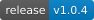
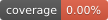

🚀 FastAPI Observability Stack


A production-ready template for running a FastAPI application with built-in observability using:
- 📈 Prometheus (metrics)
- 📊 Grafana (visualization)
- 🔍 Jaeger (tracing)
The project uses modern Python packaging with uv, Docker, and a Makefile-driven workflow for simplicity and reproducibility.
Overview
This repository provides a clean and scalable setup for:
- Running a FastAPI application with middleware support
- Installing dependencies using uv
- Observing your application via metrics, logs, and traces
- Managing everything through a simple Makefile interface
Architecture
This project uses a containerized observability stack to collect logs, traces, and metrics from the application.
The main components are deployed via Docker Compose and communicate over the observer-network.
- Observability Service
- Runs the main application and exports logs and traces using OpenTelemetry.
- Environment variables configure OTEL exporters and Python logging.
- Configuration files are mounted from
../cfg/config.cfgto provide the necessary settings for log and metric collection.
- OpenTelemetry Collector
- Receives OTLP data from the application (gRPC port 4317, HTTP port 4318).
- Exposes Prometheus metrics on port 9464.
- Forwards traces to Tempo and logs to Loki.
- Tracing and Logging
- Tempo stores distributed traces, which can be visualized in Grafana.
- Jaeger provides a UI for inspecting traces (port 16686).
- Loki collects logs and exposes them for query and dashboard visualization.
- Metrics
- Prometheus scrapes metrics from the OTEL Collector and other services.
- Metrics can be visualized in Grafana dashboards.
- Dashboard and Visualization
- Grafana provides a pre-configured dashboard showing the RED architecture (Rate, Errors, Duration).
- All components are automatically integrated, showing the flow of information from the application through the collector to traces, logs, and metrics.
The configuration files already contain the necessary settings to see the complete flow of logs and metrics.
This setup ensures full observability with minimal configuration required by the developer.
Workflow detail:
┌────────────────┐
│ Observability │
│ Service │
└───────┬────────┘
│
┌───────▼────────┐
│ OTEL Collector │
└───────┬────────┘
│
┌─────────┼───────────┐
│ │ │
┌───▼───┐ ┌───▼───┐ ┌─────▼────┐
│ Loki │ │ Tempo │ │Prometheus│
│ Logs │ │ Traces│ │ Metrics │
└───┬───┘ └───┬───┘ └─────┬────┘
│ │ │
│ ┌──────▼────────┐ │
│ │ Grafana │ │
└───▶ Dashboards ◀──┘
└───────────────┘
- Observability Service → Generate logs and traces
- OTEL Collector → Receives all data, centralizes it, and forwards to the appropriate systems
- Loki → Stores logs
- Tempo → Stores traces
- Prometheus → Stores metrics
- Grafana → Dashboards for RED (Rate, Errors, Duration) visualization
Requirements
- Docker
- Docker Compose
- Make
- Python 3.13 (for local development)
- uv (Python package manager)
Getting Started
Clone the repository:
Start the full stack using Make:
This will:
- Build the Docker images
- Install dependencies using uv
- Start FastAPI
- Start Prometheus, Grafana, and Jaeger
Development Workflow (Makefile)
This project uses a Makefile to automate development, testing, and deployment tasks. Below is a summary of the available commands.
Environment & Setup
make help: Show all available commands and their descriptions.make uv-sync: Install and synchronize project dependencies usinguv.make check-venv: Verify if the correct virtual environment is active and up to date.make venv: Helper to activate the virtual environment in the current shell.
Quality, Tests & Profiling
make test: Run thepytestsuite (optimized for quick feedback).make pre-commit: Run all pre-commit hooks on all files.make qa: Full Quality Assurance suite (alias forpre-commit).make check: Execute bothqaandtest(recommended before any push).make profile: Run a CPU profile of the app and visualize it withsnakeviz.make profile-memory: Run memory profiling and generate a plot.
Build & Release
make build: Build the Python package (createsdist/artifacts).make semantic-release: Calculate the next version based on commits (dry-run).make publish: Publish a new release usingsemantic-release.
Docker & Containers
make docker-build: Build a multi-platform Docker image (ARM64 focused).make docker-run: Run the container locally onhttp://localhost:5000.make docker-stop: Stop and remove the local container.make docker-all: Chain build, run, and follow logs in one command.make compose-up: Start the stack usingdocker-compose.make compose-down: Stop thedocker-composestack.
Documentation & Execution
make docs: Serve themkdocsdocumentation locally with live-reload.make docs-build: Build the static HTML documentation site.make uvicorn: Run the FastAPI application directly usinguvicorn.
Maintenance
make clean: Remove temporary files, caches (__pycache__,.pytest_cache), and build artifacts.make clean-dry-run: Show which files would be deleted without actually removing them.
Observability Stack
Once running, access the services:
| Service | URL |
|---|---|
| FastAPI | http://localhost:8000 |
| Grafana | http://localhost:3000 |
| Prometheus | http://localhost:9090 |
| Jaeger | http://localhost:16686 |
Features
- Middleware-based request tracing
- Prometheus metrics endpoint (/metrics)
- Distributed tracing with Jaeger
- Dashboards in Grafana
Project Structure
.
src
├── __main__.py
└── observe_me
├── __init__.py
├── app.py
├── config
│ ├── __init__.py
│ ├── app_settings.py
│ ├── config.py
│ └── custom_settings.py
├── core
│ ├── __init__.py
│ ├── info.py
│ ├── logger_api.py
│ └── security
│ ├── __init__.py
│ ├── auth.py
│ └── idp
│ ├── __init__.py
│ ├── idp_adapter.py
│ ├── idp_factory.py
│ └── keycloak_adapter.py
└── routers
├── __init__.py
├── api_router.py
└── routes.py
Best Practices
- Use uv for fast and reproducible dependency management
- Follow src/ layout for Python packaging
- Keep runtime images minimal (multi-stage builds recommended)
- Avoid using PYTHONPATH in production
- Instrument your app early (metrics + tracing)
- Use Makefile to standardize workflows
License
This project is licensed under the MIT License.